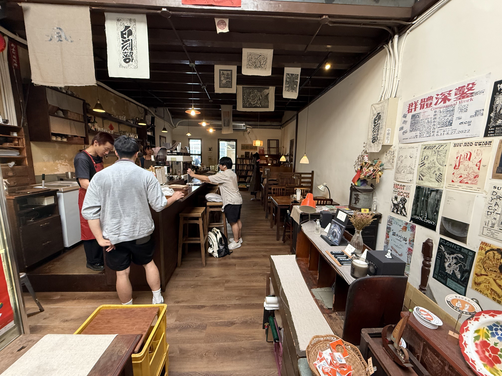

台北咖啡廳很多，其中「文青咖啡廳」不少，但究竟什麼樣的咖啡廳會被冠上「文青」這個前綴？是店內播放獨立樂團的音樂，書櫃擺滿人文社會書籍，或是不苟言笑的店員在幫你沖咖啡呢？我覺得北風社就是標準的文青咖啡廳，作為一種身份標籤，文青雖然帶有不迎合他人的態度，但來到北風社，並不會令人不悅，因為它的文青感不是刻意包裝，而是真真切切的日常生活。
位於赤峰街普通住宅區的小巷，北風社從下午一點營業至晚上十二點，不限時，提供插座與網路。每天開始營業前一樓的騎樓都排滿了人，在排隊時請輕聲細語，避免打擾附近的居民。北風社是日式老宅改造的，建物構造、桌椅陳設以木頭為主，牆上貼了各種海報，風格相當靜謐懷舊，店內也相當安靜，只有店員製作咖啡的聲音，客人大多帶著筆電工作、看書、做自己的事。

這次來北風社坐在第二層閣樓，空間不大，是榻榻米構造，有四個桌子，要脫鞋才能進去。相較二樓的寬敞舒適，閣樓並不適合長時間辦公，因為燈光昏暗，天花板高度也較低，久坐有點痛苦。餐點部分，點了西西里咖啡、風箏奶茶與奶油吐司，價格就是平均台北咖啡廳的程度，不過因為不限時的關係，性價比很高。西西里咖啡上的泡沫綿密，檸檬酸度適中，不會蓋過咖啡本身的香味。風箏奶茶滿甜的，但不會過膩，推薦給不喝咖啡的人。而奶油吐司是很多人會點的品項，外觀一般，實際吃起來還不錯，雖然不是什麼人間美味，但就是日常樸實的好味道。
北風社除了販賣咖啡、餐點，也擺設了一些飾品、CD、貼紙讓喜歡的人挑選。另外也設有戶外吸菸區，提供給有需要的人。最後，如同很多咖啡廳，北風社有一些入店規定，可以先去它的臉書粉專看看。